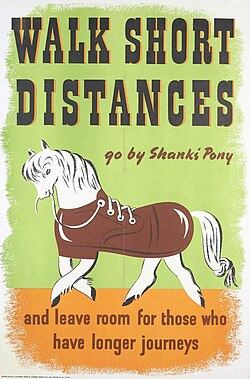

The Real Need for Walkable Cities
Urban areas are expanding rapidly nowadays, but the majority of these expansions are not going in the right direction. The consequence of these growing cities is more vehicles, more congestion, and more pollution, which have become a kind of routine. Cities that are walkable are resisting this trend by making a priority of people rather than cars. Such cities lower the release of carbon dioxide, reduce noise, and make the streets safer for all the people — children, old folks, and everyone in between. Firstly, in a planet where the problems of climate change and increasing waste are very real, walkable cities are not just an option, but the only possible way of living sustainably and responsibly. Walkability also improves mental well-being. Streets feel safer, calmer, and cleaner—helping reduce waste and encouraging responsible consumption, which is exactly what SDG 12 stands for.

How Walkability Supports SDG 12.5 (Waste Reduction)
Walkability might not sound directly connected to waste reduction, but it is. When areas are designed for people:
- Public dustbins are more accessible → less littering
- More walking → less fuel waste
- Cleaner streets → lower waste generation
- Proper pathways → organized waste management
- Public water refill points → less single-use plastic bottles
What a Walkable City Looks Like
- Continuous, non-broken footpaths
- Safe zebra crossings and proper signals
- Shaded streets with trees
- Street lights that work at night
- Benches for resting
- Drinking water points
- Dustbins every 100–150m
How We Can Improve Walkability
- Repair & widen footpaths
- Remove vehicles parked on walkways
- Create “no vehicle zones” in busy markets
- Increase greenery along major roads
- Clearly marked crossings near schools
- Improve street lighting in residential areas
- Provide water refill stations to reduce plastic
A walkable city is not just convenient—it's sustainable, responsible, and future-ready.